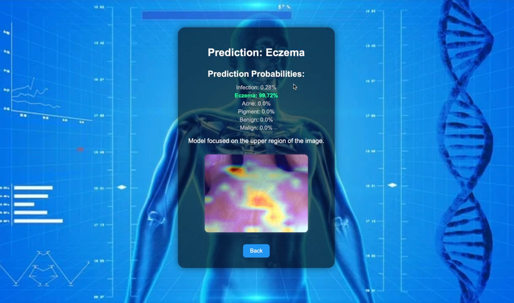

Computer Vision Portfolio Project
Skin Disease Image Classification
An end-to-end six-class dermatology-image classifier: compared transfer-learning architectures, selected and fine-tuned ResNet50 through class-aware evaluation, and delivered the final model through a Flask application with Grad-CAM visual explanations.
The challenge
Classifying an imbalanced medical-image dataset
The model predicts one of six classes: Infection, Eczema, Acne, Pigment, Benign, and Malign. The project covered dataset selection, preprocessing, transfer learning, fine-tuning, evaluation, and application development—not only training a single model.
Because the dataset was imbalanced, overall accuracy alone could hide weak performance in less-represented classes. Model selection therefore considered macro F1, per-class precision and recall, and confusion patterns alongside validation accuracy.
Core stack
- Python, TensorFlow, Keras
- ResNet50 and transfer learning
- Flask and SQLite
- OpenCV and Grad-CAM
Technical decisions
How the model was built
- Compared multiple transfer-learning architectures and selected ResNet50 using validation performance, macro F1, per-class metrics, and confusion patterns.
- Used class weights to reduce the effect of unequal class representation.
- Applied early stopping, learning-rate reduction, and checkpoints during training.
- Compared results using precision, recall, F1, and confusion matrices—not accuracy alone.
Research workflow
Training and model selection
The original notebooks record the experimentation process: ImageNet-pretrained backbones, class weighting, early stopping, learning-rate reduction, model checkpoints, training curves, classification reports, and confusion matrices.
ResNet50 was chosen as the final application model after comparing architectures and fine-tuning results against the project’s evaluation criteria.
From model to application
Designed for an end user
The Flask application accepts an uploaded image, preprocesses it for the trained model, returns a predicted class and probability distribution, and generates a Grad-CAM overlay for the specific prediction.
It also includes user registration, login, and per-user upload history, demonstrating how a trained model can be integrated into a complete application workflow.
Evaluation insights and limitations
Interpreting model performance responsibly
- Performance varied across classes with visually overlapping characteristics, where the model showed greater confusion.
- Underrepresented categories received less reliable predictions, illustrating the effect of class imbalance.
- A clinical system would require external validation, bias analysis, privacy safeguards, and regulatory approval.
Application demo
Prediction probabilities and Grad-CAM
The interface returns the predicted class and confidence distribution, then highlights image regions that most influenced the model. Grad-CAM is an attention visualisation, not a clinical explanation.
